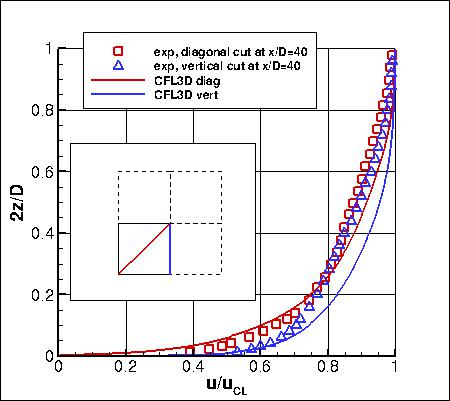
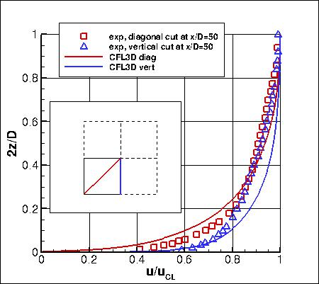
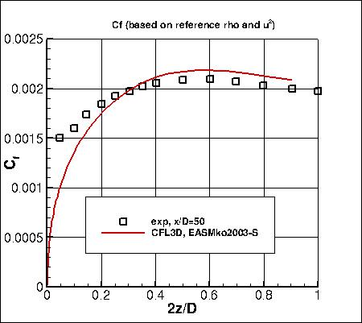
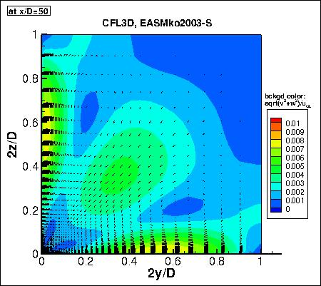

Public Access (formerly Langley Research Center)Turbulence Modeling Resource |
Jump to: SA Results, SA-QCR2000 Results, SSTm Results, SSG/LRR-RSM-w2012 Results, GLVY-RSM-2012 Results
Return to: 3D Supersonic Square Duct Case Intro Page
Return to: Turbulence Modeling Resource Home Page
3D Supersonic Square Duct Validation Case
EASMko2003-S Model Results
Link to EASMko2003-S equations




Note that thorough
grid studies were not performed for validation cases such as this one.
Especially for 3-D cases, there may still be
significant discretization errors. Therefore, these validation results shown should be considered
representative, but not "truth."
The plots show the EASMko2003-S results from
CFL3D along with experimental data.
CFL3D specified supersonic freestream conditions as the inflow BC,
and used freestream turbulence intensity=0.002% and freestream turbulent viscosity (relative to laminar)=0.009
(additional details can be found in the CFL3D User's Manual, Appendix H).
Please read note 5 on Notes on running CFD page.
These results are from the second-finest grid (481x81x81).
As can be seen from the last figure,
this nonlinear model exhibits secondary circulation near the corners,
and yields better velocity and skin friction results compared to the Boussinesq models SA and SSTm, shown on other pages.
(In the figures, uCL
is the u-velocity at the center point 2y/D=2z/D=1 in whatever x-plane you are plotting.)
Note that these are compressible code results (no compressibility
corrections).
Some of the data files from CFL3D are given here for reference:
cfl3d_result40_easmkos.dat,
cfl3d_result50_easmkos.dat,
cfl3d_cf50_easmkos.dat,
(Note: the profiles have been interpolated using Tecplot software onto pre-set points, that may or may
not correspond to the actual grid points or grid cells used in the computation.)
A typical CFL3D input file is:
cfl3d_sqduct_typical_easmkos.inp.
Note that this model is currently assigned
MRR Level 1 for the purposes of this website.
This is because at this time the TMBWG has results for this model
from only one code. The results on this page are therefore not necessarily
reliable until additional independent code(s) can be used to verify the model implementation.
Jump to: SA Results,
SA-QCR2000 Results,
SSTm Results,
SSG/LRR-RSM-w2012 Results,
GLVY-RSM-2012 Results Return to: 3D Supersonic Square Duct Case Intro Page Return to: Turbulence Modeling Resource Home Page
Page Curators: Christopher Rumsey,
Ethan Vogel,
Clark Pederson
Last Updated: 03/23/2021